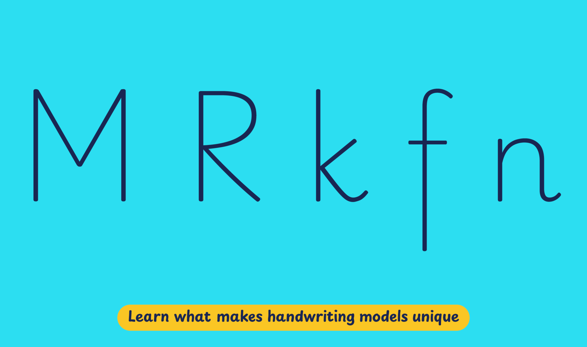

In Germany, education is regulated at the state level rather than at the national level. Each state defines its own models and methods of teaching handwriting in primary schools. The common goal is acquiring a personal style of connected handwriting at the end of primary school in fourth grade (10-11 years old). Emphasis is on the flow of connected writing, letter recognition, and legibility, not the exact imitation of individual letters.
In most states, teachers and schools can choose from three cursive styles: Ausgangsschrift (LA), Vereinfachte Ausgangsschrift (VA), and Schulausgangsschrift (SAS). But in 2010, the Grundschulverband, or Association of Primary Schools, presented an alternative progressive approach for handwriting teaching: Grundschrift, based primarily on a print-style script with some added cursive elements, like Häckchen, or exit strokes. Some German states, like Bremen and Hamburg, allow this method to be used in schools, in addition to the dominant Ausgangschrift systems. According to Das Deutsche Schulportal, Grundschrift is taught in 10% of all German schools.
Playwrite Deutschland Grundschrift is a variable font with a weight range from Thin (100) to Regular (400), and supports over 150 Latin-based languages.
To contribute, see github.com/TypeTogether/Playwrite.
This style is a simple precursive, entirely disconnected. The uppercase letters are simplified print forms, notable for a two-stroke 'R' and an 'M' with a raised middle point. Several lowercase letters retain the characteristic exit stroke typical of precursives. The letter 'k' is constructed using two strokes, and the 'f' features a straight descender, distinguishing it within this straightforward style.

Playwrite Deutschland Grundschrift appears in font menus with a two-letter country code ‘DE’ and a the ‘Grund’ abbreviation, Playwrite DE Grund. It features four styles: Thin, ExtraLight, Light, and Regular.
The download .zip file includes the variable font and standard static ttf fonts for each style.
The Playwrite school fonts are based on the findings of Primarium, a groundbreaking educational effort that documents the history and current practice of handwriting models taught to primary school students worldwide. This typographic engine serves teachers, educators, and parents by generating localized libre fonts. These Playwrite fonts are complemented by Playpen Sans, an informal and fun typeface designed for annotations, instructions, and student notes – that also includes emojis.
For more information about the Primarium project, visit primarium.info and to learn more about handwriting education in Germany, see primarium.info/countries/germany
Windows: Download the font file to your computer. Navigate to where you saved the font file and double-click it to open. Click the "Install" button at the top of the font preview window. The font is now installed and ready to be used across your apps.
macOS: After downloading the font file to your Mac, right-click it in Finder and select "Open With" > "Font Book". Then, click "Install Font" in the font preview window that pops up. The font is now installed and ready to be used across your apps.
The Playwrite font family uses complex OpenType features to generate connected writing. Some common applications require these features to be manually activated.
Note: This font family doesn't include Bold or Italic styles, so please avoid applying them in text editors. If you use the common 'B' and 'I' buttons, you will automatically generate low-quality styles.
Microsoft Word: Go to Format in the Menu bar, select Font, and then the Advanced tab. Activate "Contextual Alternates" and "Kerning for fonts below" to apply these settings to all text sizes.
LibreOffice: To select the different styles, go to Format in the Menu bar, select Character, and use the Typeface menu.
Adobe InDesign: Open the Paragraph Panel and select Adobe "World-Ready Paragraph Composer" from the contextual menu.
Adobe Illustrator: Navigate to Preferences > Type, check the "Show Indic Options" box, and close preferences. Then open the Paragraph Panel and select "Middle Eastern Composer" from the contextual menu.
Adobe Photoshop: Access the Paragraph Panel, then choose "World-Ready Layout" from the contextual menu.
The above instructions are also available in PDF format here